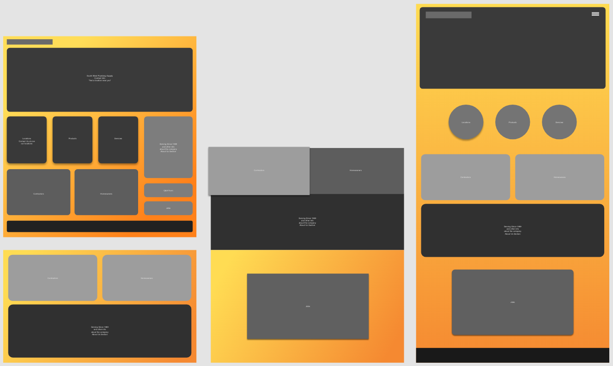
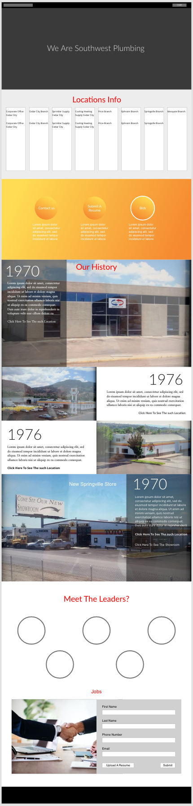
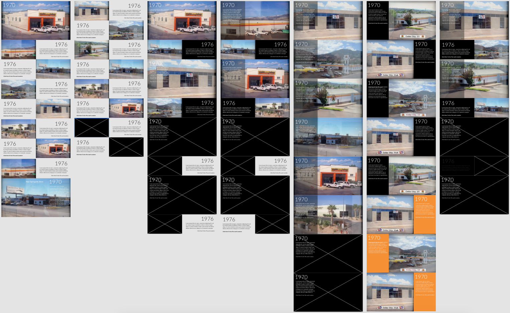

Southwest Plumbing Supply
Overview:
While this is an older project of mine I still found it useful to describe my process and show how I iterate throughout it. The task was to redesign the homepage of the Southwest Plumbing Supply website. My goals were to conduct user research to find out the purpose of the site. Learn about who the main audience is and coordinate with the marketing team to make sure it meets brand expectations.
Site Purposes:
- Provide a place for contractors to order supplies.
- Inform the public where their stores were located and how to contact them.
- Provide a history of the company.
Target Audience:
- Older male plumbers.
- General public.
The older male plumbing contractors that do not like change. These contractors have been doing business with Southwest Plumbing Supply for more than twenty years. What they do on the site is log in, order supplies, and pay off their remaining balances. They would be pretty upset if that process changed. Then for the rest of site visitors they’ll need to be able to find a store near them and call the store if need be.
Wireframe v1:
For these wireframes I was iterating on layout and section ideas. (Psst! Gradient backgrounds were very in back then, and while I didn't know it at the time I now realize I was overdoing it with the gradient background.)
Wireframe v2:
History Section Ideas:
Wireframe v3:
Final Product:

Not pictured is the “Our Top Brands” section. While coding the project the site owners wanted to switch out the “Leadership” section for a grid of all the top brands they sell. Then when users clicked on a brand it would take them to a parts page of all the parts sold by that brand.